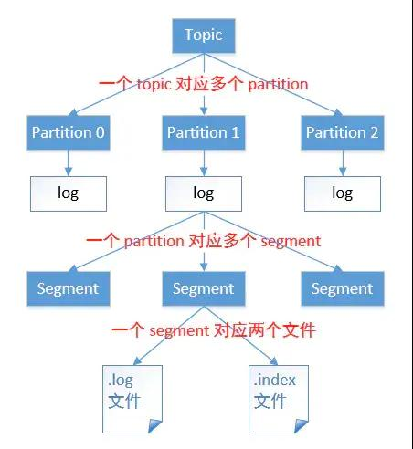

Kafka 架构原理
Kafka 中最重要的概念，分别是 Broker、Producer、Consumer、Consumer Group、Topic、Partition、Replica、Leader、Follower.
定义
Kafka 是一个分布式的基于发布/订阅模式的消息队列(Message Queue)，主要应用与大数据实时处理领域。
消息队列
Kafka 本质上是一个 MQ(Message Queue)，使用消息队列的好处?(面试会问)
- 解耦：允许我们独立的扩展或修改队列两边的处理过程。
- 可恢复性：即使一个处理消息的进程挂掉，加入队列中的消息仍然可以在系统恢复后被处理。
- 缓冲：有助于解决生产消息和消费消息的处理速度不一致的情况。
- 灵活性&峰值处理能力：不会因为突发的超负荷的请求而完全崩溃，消息队列能够使关键组件顶住突发的访问压力。
- 异步通信：消息队列允许用户把消息放入队列但不立即处理它。
发布/订阅模式
一对多，生产者将消息发布到 Topic 中，有多个消费者订阅该主题，发布到 Topic 的消息会被所有订阅者消费，被消费的数据不会立即从 Topic 清除。
架构

Kafka 存储的消息来自任意多被称为 Producer 生产者的进程。数据从而可以被发布到不同的 Topic 主题下的不同 Partition 分区。
在一个分区内，这些消息被索引并连同时间戳存储在一起。其它被称为 Consumer 消费者的进程可以从分区订阅消息。
Kafka 运行在一个由一台或多台服务器组成的集群上，并且分区可以跨集群结点分布。
下面给出 Kafka 一些重要概念，让大家对 Kafka 有个整体的认识和感知，后面还会详细的解析每一个概念的作用以及更深入的原理：
- Producer： 消息生产者，向 Kafka Broker 发消息的客户端。
- Consumer：消息消费者，从 Kafka Broker 取消息的客户端。
- Consumer Group：消费者组(CG)，消费者组内每个消费者负责消费不同分区的数据，提高消费能力。一个分区只能由组内一个消费者消费，消费者组之间互不影响。所有的消费者都属于某个消费者组，即消费者组是逻辑上的一个订阅者。
- Broker：一台 Kafka 机器就是一个 Broker。一个集群由多个 Broker 组成。一个 Broker 可以容纳多个 Topic。
- Topic：可以理解为一个队列，Topic 将消息分类，生产者和消费者面向的是同一个 Topic。
- Partition：为了实现扩展性，提高并发能力，一个非常大的 Topic 可以分布到多个 Broker (即服务器)上，一个 Topic 可以分为多个 Partition，每个 Partition 是一个 有序的队列。
- Replica：副本，为实现备份的功能，保证集群中的某个节点发生故障时，该节点上的 Partition 数据不丢失，且 Kafka 仍然能够继续工作，Kafka 提供了副本机制，一个 Topic 的每个分区都有若干个副本，一个 Leader 和若干个 Follower。
- Leader：每个分区多个副本的“主”副本，生产者发送数据的对象，以及消费者消费数据的对象，都是 Leader。
- Follower：每个分区多个副本的“从”副本，实时从 Leader 中同步数据，保持和 Leader 数据的同步。Leader 发生故障时，某个 Follower 还会成为新的 Leader。
- Offset：消费者消费的位置信息，监控数据消费到什么位置，当消费者挂掉再重新恢复的时候，可以从消费位置继续消费。
- Zookeeper：Kafka 集群能够正常工作，需要依赖于 Zookeeper，Zookeeper 帮助 Kafka 存储和管理集群信息。
工作流程

Kafka 是一个分布式流平台，这到底是什么意思?
- 发布和订阅记录流，类似于消息队列或企业消息传递系统。
- 以容错的持久方式存储记录流。
- 处理记录流。
Kafka 中消息是以 Topic 进行分类的，生产者生产消息，消费者消费消息，面向的都是同一个 Topic。
Topic 是逻辑上的概念，而 Partition 是物理上的概念，每个 Partition 对应于一个 log 文件，该 log 文件中存储的就是 Producer 生产的数据。
Producer 生产的数据会不断追加到该 log 文件末端，且每条数据都有自己的 Offset。
消费者组中的每个消费者，都会实时记录自己消费到了哪个 Offset，以便出错恢复时，从上次的位置继续消费。
存储机制

由于生产者生产的消息会不断追加到 log 文件末尾，为防止 log 文件过大导致数据定位效率低下，Kafka 采取了分片和索引机制。
它将每个 Partition 分为多个 Segment，每个 Segment 对应两个文件：“.index” 索引文件和 “.log” 数据文件。
这些文件位于同一文件下，该文件夹的命名规则为：topic 名-分区号
index 和 log 文件以当前 Segment 的第一条消息的 Offset 命名。
“.index” 文件存储大量的索引信息，“.log” 文件存储大量的数据，索引文件中的元数据指向对应数据文件中 Message 的物理偏移量。
For more details: